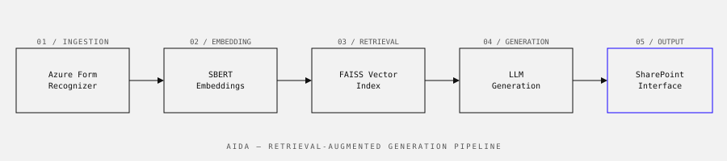

Equans · 2023–2024
A Retrieval-Augmented Generation system that lets engineers ask natural-language questions about technical documentation — and get accurate, sourced answers in seconds.

Equans maintains thousands of pages of technical documentation — installation manuals, safety guidelines, engineering specifications — spread across SharePoint folders that engineers search manually. Finding the right document for a specific machine or procedure could take 20–30 minutes. In some cases, engineers gave up and called a specialist instead.
Build a system that can answer technical questions about documents it has never explicitly been trained on. The document set changes frequently — new manuals are added, old ones updated. A fine-tuned model would go stale immediately. The answer needed to be retrieval-based, not memorisation-based.
A second constraint: the system had to run within Equans's existing Azure infrastructure. No external APIs for document content. No cloud LLM with document data leaving the organisation.
AIDA (AI Document Assistant) is a RAG pipeline with four main components:
The SharePoint integration means engineers interact with AIDA through a familiar interface rather than a separate tool — reducing the adoption barrier significantly.
In user testing with six engineers, average time to find an answer dropped from approximately 25 minutes to under 2 minutes. More importantly, the accuracy of retrieved information was rated as "correct or mostly correct" in 89% of test cases.
The system handled 400+ documents at launch across three document categories. Engineers flagged incorrect answers in roughly 11% of cases — mostly edge cases involving highly technical abbreviations specific to certain equipment lines.
Real-world PDFs are not clean. Azure Form Recognizer solved most of the parsing problems, but scanned documents, rotated tables, and inconsistent heading hierarchies required significant pre-processing work that wasn't in the original project scope. I wrote about this in more detail in The PDFs were not what I expected.
Chunking strategy matters more than model choice. Early versions split documents at fixed character counts, which split sentences mid-thought and degraded retrieval quality significantly. Switching to semantic chunking (splitting at section boundaries) improved the top-5 retrieval accuracy by around 18 percentage points.